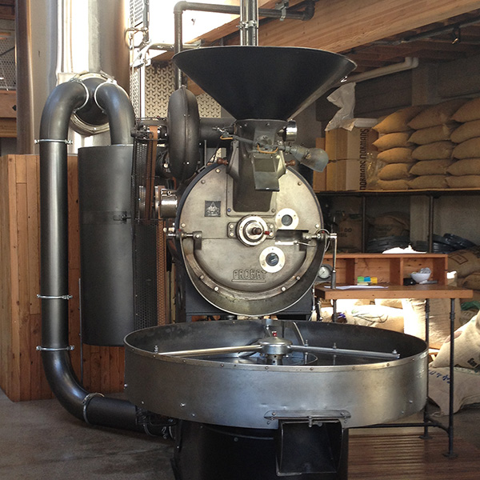

Filters
Filters is a CSS file that provides Instagram-like filters in CSS.
Filters uses the CSS filter property, which is currently available only in Webkit-based browsers like Chrome and Safari, so use one of those to view this page.
Filters was inspired by CamanJS
Preset Filters
filters.css has a couple preset combinations of CSS filter effects that can be used to style images.

Create Your Own
Below is a list of the available CSS filter effects. Move their sliders to create your own image filters.

-webkit-filter: none;
blur
invert
brightness
opacity
contrast
saturate
grayscale
sepia
hue-rotate